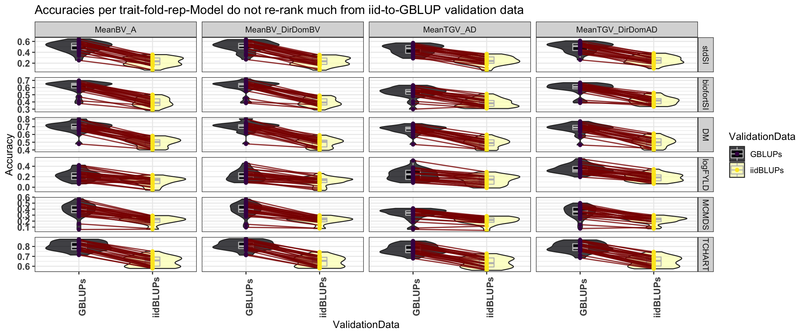
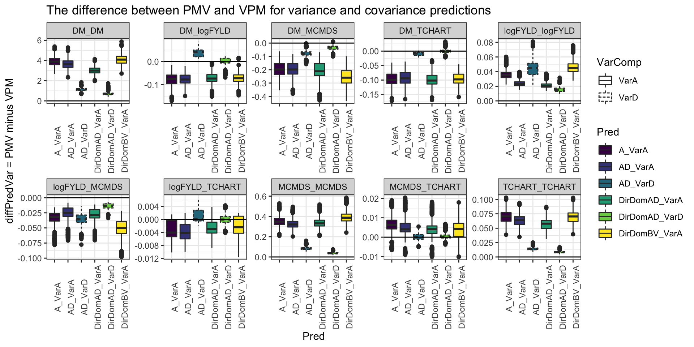
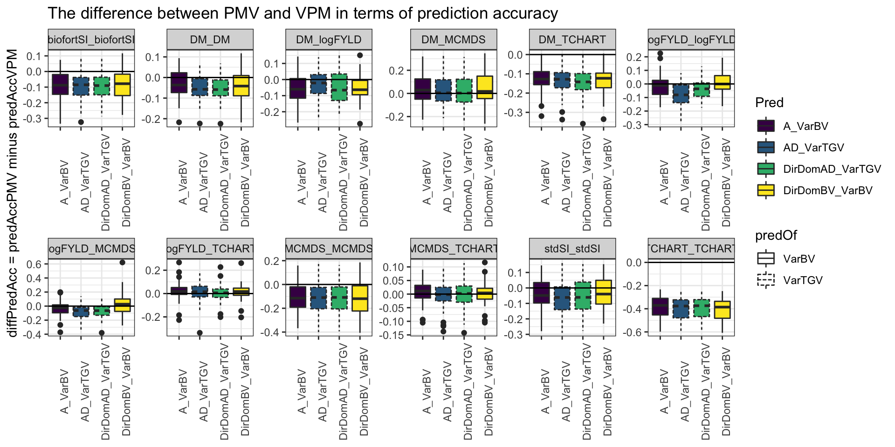
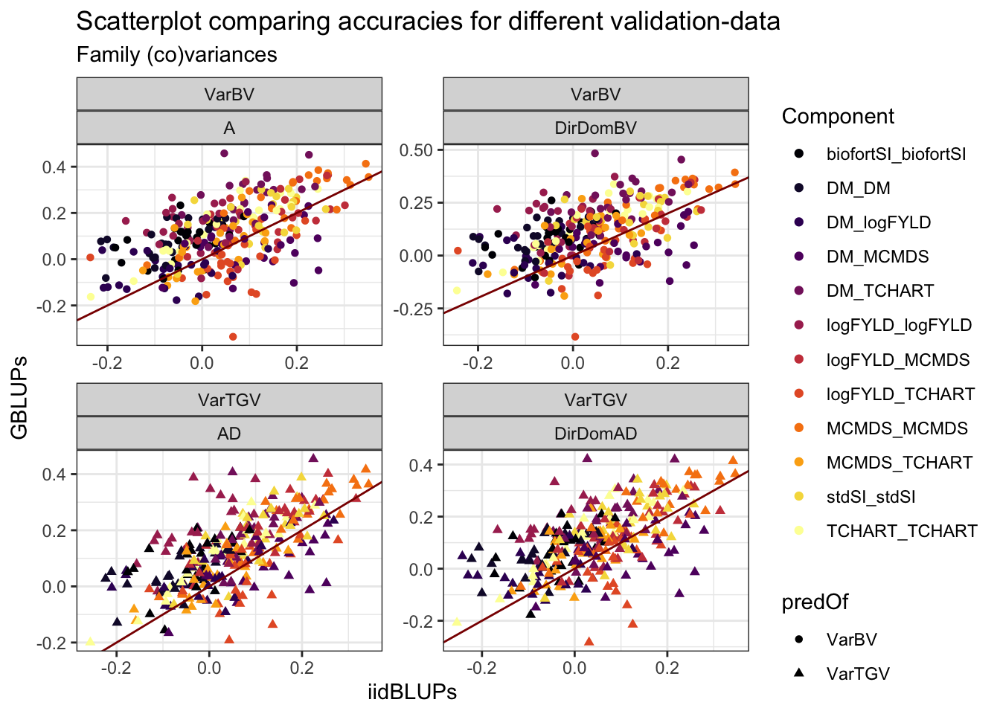
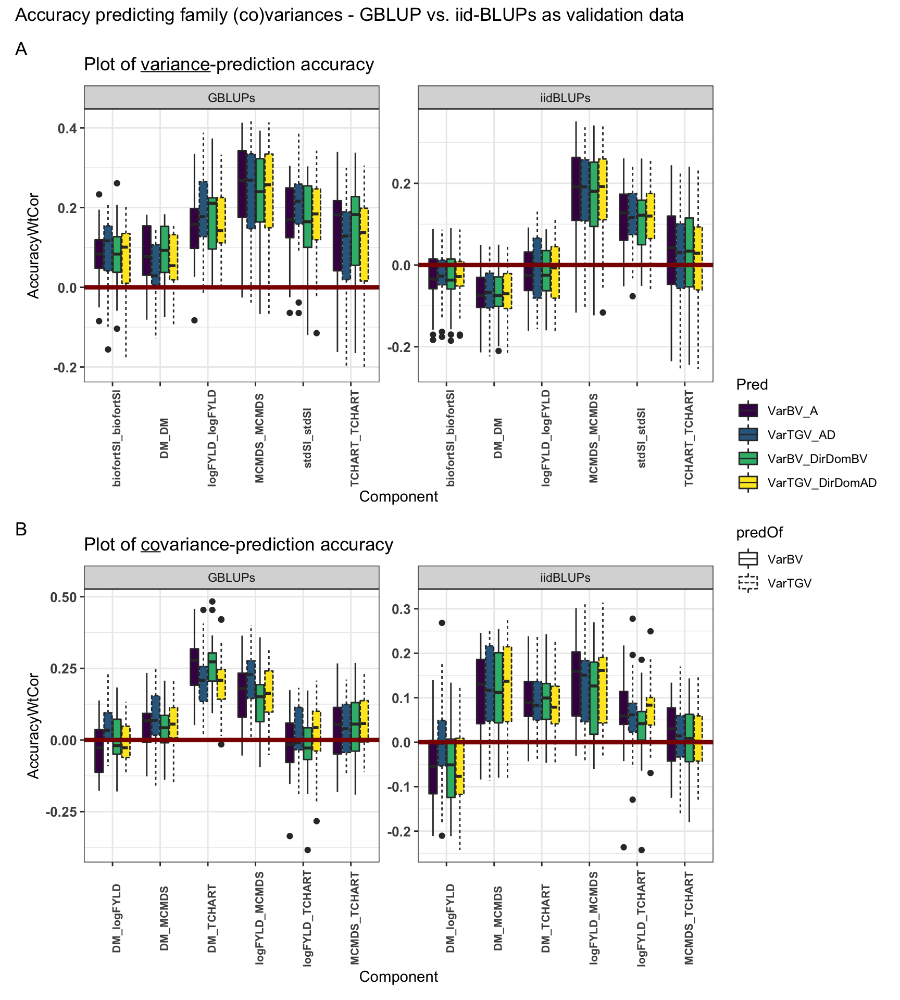
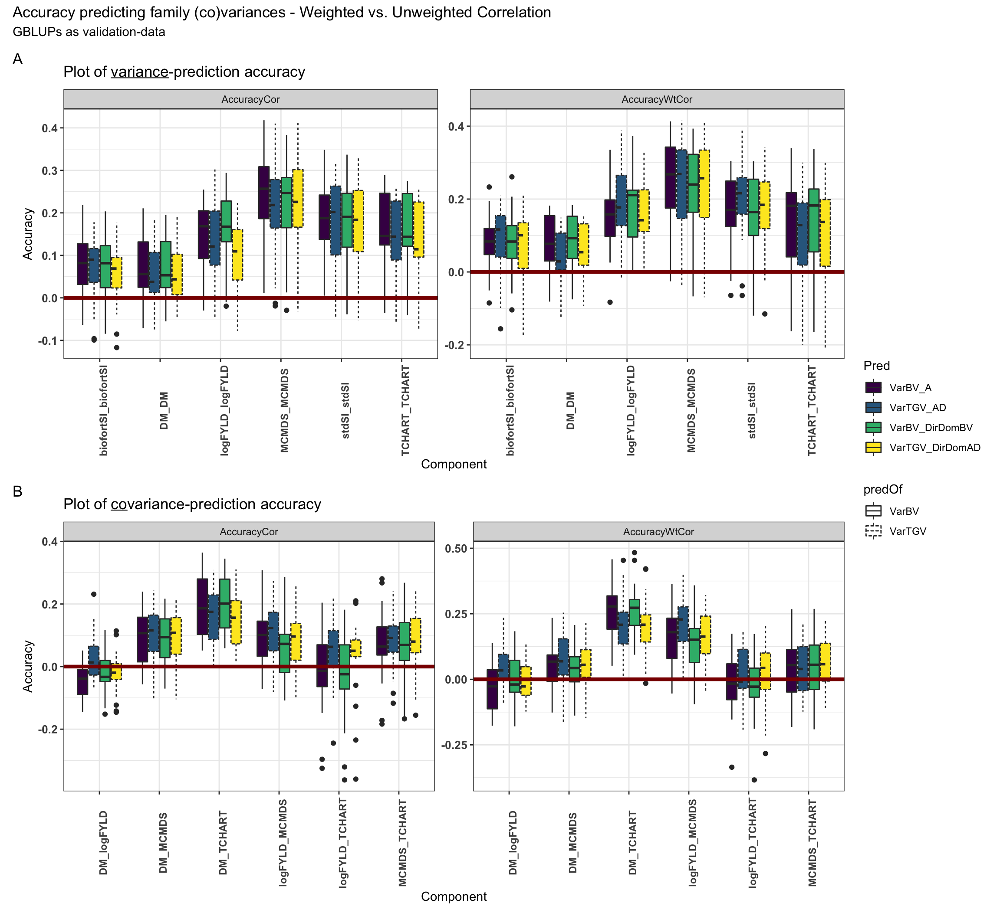
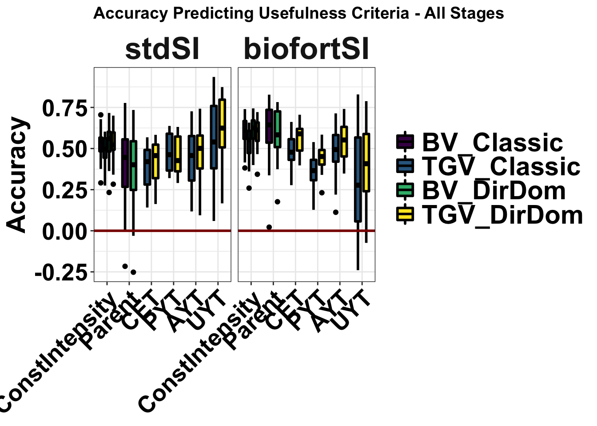
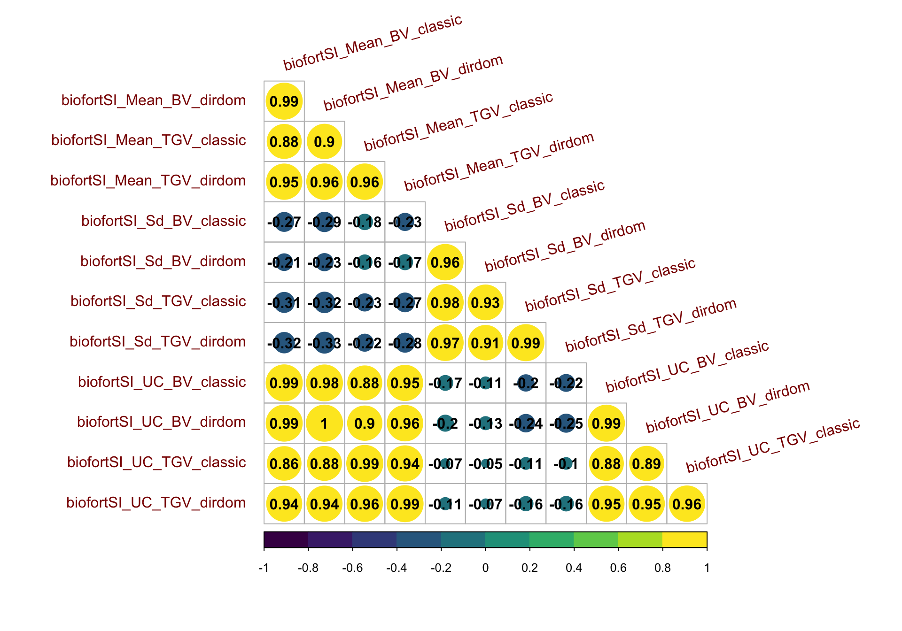

Supplementary Material for ‘Genomic mating in outbred species: predicting cross usefulness with additive and total genetic covariance matrices’
Last updated: 2021-01-02
Checks: 6 1
Knit directory: PredictOutbredCrossVar/
This reproducible R Markdown analysis was created with workflowr (version 1.6.2). The Checks tab describes the reproducibility checks that were applied when the results were created. The Past versions tab lists the development history.
The R Markdown file has unstaged changes. To know which version of the R Markdown file created these results, you’ll want to first commit it to the Git repo. If you’re still working on the analysis, you can ignore this warning. When you’re finished, you can run wflow_publish to commit the R Markdown file and build the HTML.
Great job! The global environment was empty. Objects defined in the global environment can affect the analysis in your R Markdown file in unknown ways. For reproduciblity it’s best to always run the code in an empty environment.
The command set.seed(20191123) was run prior to running the code in the R Markdown file. Setting a seed ensures that any results that rely on randomness, e.g. subsampling or permutations, are reproducible.
Great job! Recording the operating system, R version, and package versions is critical for reproducibility.
Nice! There were no cached chunks for this analysis, so you can be confident that you successfully produced the results during this run.
Great job! Using relative paths to the files within your workflowr project makes it easier to run your code on other machines.
Great! You are using Git for version control. Tracking code development and connecting the code version to the results is critical for reproducibility.
The results in this page were generated with repository version 0398517. See the Past versions tab to see a history of the changes made to the R Markdown and HTML files.
Note that you need to be careful to ensure that all relevant files for the analysis have been committed to Git prior to generating the results (you can use wflow_publish or wflow_git_commit). workflowr only checks the R Markdown file, but you know if there are other scripts or data files that it depends on. Below is the status of the Git repository when the results were generated:
Ignored files:
Ignored: .DS_Store
Ignored: .Rhistory
Ignored: .Rproj.user/
Ignored: analysis/.DS_Store
Ignored: code/.DS_Store
Ignored: data/.DS_Store
Ignored: manuscript/.DS_Store
Ignored: output/.DS_Store
Ignored: output/crossPredictions/.DS_Store
Ignored: output/crossPredictions/.gitignore
Ignored: output/crossPredictions/Icon
Ignored: output/crossPredictions/July2020/
Ignored: output/crossPredictions/defunctDirectionalDomResults/
Ignored: output/crossPredictions/mt_Repeat1_Fold1_trainset_A_predVarAndCovarBVs.rds
Ignored: output/crossPredictions/mt_Repeat1_Fold2_trainset_A_predVarAndCovarBVs.rds
Ignored: output/crossPredictions/mt_Repeat1_Fold3_trainset_A_predVarAndCovarBVs.rds
Ignored: output/crossPredictions/mt_Repeat1_Fold4_trainset_A_predVarAndCovarBVs.rds
Ignored: output/crossPredictions/mt_Repeat1_Fold5_trainset_A_predVarAndCovarBVs.rds
Ignored: output/crossPredictions/mt_Repeat2_Fold1_trainset_A_predVarAndCovarBVs.rds
Ignored: output/crossPredictions/mt_Repeat2_Fold2_trainset_A_predVarAndCovarBVs.rds
Ignored: output/crossPredictions/mt_Repeat2_Fold3_trainset_A_predVarAndCovarBVs.rds
Ignored: output/crossPredictions/mt_Repeat2_Fold4_trainset_A_predVarAndCovarBVs.rds
Ignored: output/crossPredictions/mt_Repeat2_Fold5_trainset_A_predVarAndCovarBVs.rds
Ignored: output/crossPredictions/mt_Repeat3_Fold1_trainset_A_predVarAndCovarBVs.rds
Ignored: output/crossPredictions/mt_Repeat3_Fold2_trainset_A_predVarAndCovarBVs.rds
Ignored: output/crossPredictions/mt_Repeat3_Fold3_trainset_A_predVarAndCovarBVs.rds
Ignored: output/crossPredictions/mt_Repeat3_Fold4_trainset_A_predVarAndCovarBVs.rds
Ignored: output/crossPredictions/mt_Repeat3_Fold5_trainset_A_predVarAndCovarBVs.rds
Ignored: output/crossPredictions/mt_Repeat4_Fold1_trainset_A_predVarAndCovarBVs.rds
Ignored: output/crossPredictions/mt_Repeat4_Fold2_trainset_A_predVarAndCovarBVs.rds
Ignored: output/crossPredictions/mt_Repeat4_Fold3_trainset_A_predVarAndCovarBVs.rds
Ignored: output/crossPredictions/mt_Repeat4_Fold4_trainset_A_predVarAndCovarBVs.rds
Ignored: output/crossPredictions/mt_Repeat4_Fold5_trainset_A_predVarAndCovarBVs.rds
Ignored: output/crossPredictions/mt_Repeat5_Fold1_trainset_A_predVarAndCovarBVs.rds
Ignored: output/crossPredictions/mt_Repeat5_Fold2_trainset_A_predVarAndCovarBVs.rds
Ignored: output/crossPredictions/mt_Repeat5_Fold3_trainset_A_predVarAndCovarBVs.rds
Ignored: output/crossPredictions/mt_Repeat5_Fold4_trainset_A_predVarAndCovarBVs.rds
Ignored: output/crossPredictions/mt_Repeat5_Fold5_trainset_A_predVarAndCovarBVs.rds
Ignored: output/crossPredictions/otherRetiredEarlyResults/
Ignored: output/crossPredictions/predUntestedCrossBVs_ReDoSelfs_A_predVarAndCovarBVs.rds
Ignored: output/crossPredictions/predUntestedCrossTGVs_ReDoSelfs_AD_predVarsAndCovars.rds
Ignored: output/crossPredictions/predictedCrossVars_chunk1_2Dec2020.rds
Ignored: output/crossPredictions/predictedCrossVars_chunk2_2Dec2020.rds
Ignored: output/crossPredictions/predictedCrossVars_chunk3_2Dec2020.rds
Ignored: output/crossPredictions/predictedCrossVars_chunk4_2Dec2020.rds
Ignored: output/crossPredictions/predictedCrossVars_chunk5_2Dec2020.rds
Ignored: output/crossPredictions/predictedDirectionalDomCrossVarBVs_chunk1_15Dec2020.rds
Ignored: output/crossPredictions/predictedDirectionalDomCrossVarBVs_chunk1_2Dec2020.rds
Ignored: output/crossPredictions/predictedDirectionalDomCrossVarBVs_chunk2_15Dec2020.rds
Ignored: output/crossPredictions/predictedDirectionalDomCrossVarBVs_chunk2_2Dec2020.rds
Ignored: output/crossPredictions/predictedDirectionalDomCrossVarBVs_chunk3_15Dec2020.rds
Ignored: output/crossPredictions/predictedDirectionalDomCrossVarBVs_chunk3_2Dec2020.rds
Ignored: output/crossPredictions/predictedDirectionalDomCrossVarBVs_chunk4_15Dec2020.rds
Ignored: output/crossPredictions/predictedDirectionalDomCrossVarBVs_chunk4_2Dec2020.rds
Ignored: output/crossPredictions/predictedDirectionalDomCrossVarBVs_chunk5_2Dec2020.rds
Ignored: output/crossPredictions/predictedDirectionalDomCrossVarTGVs_chunk1_15Dec2020.rds
Ignored: output/crossPredictions/predictedDirectionalDomCrossVarTGVs_chunk1_2Dec2020.rds
Ignored: output/crossPredictions/predictedDirectionalDomCrossVarTGVs_chunk2_15Dec2020.rds
Ignored: output/crossPredictions/predictedDirectionalDomCrossVarTGVs_chunk2_2Dec2020.rds
Ignored: output/crossPredictions/predictedDirectionalDomCrossVarTGVs_chunk3_15Dec2020.rds
Ignored: output/crossPredictions/predictedDirectionalDomCrossVarTGVs_chunk3_2Dec2020.rds
Ignored: output/crossPredictions/predictedDirectionalDomCrossVarTGVs_chunk4_15Dec2020.rds
Ignored: output/crossPredictions/predictedDirectionalDomCrossVarTGVs_chunk4_2Dec2020.rds
Ignored: output/crossPredictions/predictedDirectionalDomCrossVarTGVs_chunk5_2Dec2020.rds
Ignored: output/crossPredictions/retired_ReDoSelfs/
Ignored: output/crossRealizations/.DS_Store
Ignored: output/mtMarkerEffects/Icon
Untracked files:
Untracked: Abstract_EdingburghCompGenomicsTalk_2020June02.gdoc
Untracked: Icon
Untracked: ScratchSlidesAndNotes.gslides
Untracked: analysis/ICQG6.Rmd
Untracked: analysis/Icon
Untracked: archive/
Untracked: code/Icon
Untracked: data/Icon
Untracked: manuscript/CoverLetter_GENETICS.gdoc
Untracked: manuscript/Figures.gslides
Untracked: manuscript/SupplementaryTable06.csv
Untracked: manuscript/SupplementaryTable07.csv
Untracked: manuscript/SupplementaryTable08.csv
Untracked: manuscript/SupplementaryTable09.csv
Untracked: manuscript/SupplementaryTable17.csv
Untracked: manuscript/SupplementaryTable18.csv
Untracked: output/Figures/
Untracked: output/Icon
Untracked: output/Tables/
Untracked: output/crossRealizations/Icon
Untracked: predCrossVar/
Untracked: rsyncs.R
Untracked: rsyncs2.R
Untracked: setupOnServer.R
Unstaged changes:
Modified: analysis/NGCleadersCall.Rmd
Modified: analysis/Results.Rmd
Modified: analysis/SupplementaryFigures.Rmd
Modified: analysis/SupplementaryMaterial.Rmd
Modified: analysis/SupplementaryTables.Rmd
Modified: analysis/fitMtBRRs.Rmd
Modified: analysis/getPMVarComps.Rmd
Modified: analysis/predictUntestedCrosses.Rmd
Modified: analysis/predictionAccuracy.Rmd
Modified: code/getDirectionalDomMtCrossVarTGVpreds.R
Modified: data/Madd_awc.rds
Modified: data/Mdom_awc.rds
Modified: data/blups_forawcdata.rds
Modified: data/dosages_awc.rds
Modified: data/genmap_awc_May2020.rds
Modified: data/haps_awc.rds
Modified: data/iita_blupsForCrossVal_72619.rds
Modified: data/parentwise_crossVal_folds.rds
Modified: data/ped_awc.rds
Modified: data/recombFreqMat_1minus2c_awcmap_May2020.rds
Modified: manuscript/SupplementaryTables.xlsx
Modified: output/accuraciesMeans.rds
Modified: output/accuraciesUC.rds
Modified: output/accuraciesVars.rds
Modified: output/crossPredictions/TableS7_predictedCrossVars.rds
Modified: output/crossPredictions/mt_Repeat1_Fold1_trainset_AD_predVarsAndCovars.rds
Deleted: output/crossPredictions/mt_Repeat1_Fold1_trainset_A_predVarsAndCovars.rds
Modified: output/crossPredictions/mt_Repeat1_Fold1_trainset_DirectionalDom_predVarAndCovarBVs.rds
Modified: output/crossPredictions/mt_Repeat1_Fold1_trainset_DirectionalDom_predVarsAndCovars.rds
Modified: output/crossPredictions/mt_Repeat1_Fold2_trainset_AD_predVarsAndCovars.rds
Deleted: output/crossPredictions/mt_Repeat1_Fold2_trainset_A_predVarsAndCovars.rds
Modified: output/crossPredictions/mt_Repeat1_Fold2_trainset_DirectionalDom_predVarAndCovarBVs.rds
Modified: output/crossPredictions/mt_Repeat1_Fold2_trainset_DirectionalDom_predVarsAndCovars.rds
Modified: output/crossPredictions/mt_Repeat1_Fold3_trainset_AD_predVarsAndCovars.rds
Deleted: output/crossPredictions/mt_Repeat1_Fold3_trainset_A_predVarsAndCovars.rds
Modified: output/crossPredictions/mt_Repeat1_Fold3_trainset_DirectionalDom_predVarAndCovarBVs.rds
Modified: output/crossPredictions/mt_Repeat1_Fold3_trainset_DirectionalDom_predVarsAndCovars.rds
Modified: output/crossPredictions/mt_Repeat1_Fold4_trainset_AD_predVarsAndCovars.rds
Deleted: output/crossPredictions/mt_Repeat1_Fold4_trainset_A_predVarsAndCovars.rds
Modified: output/crossPredictions/mt_Repeat1_Fold4_trainset_DirectionalDom_predVarAndCovarBVs.rds
Modified: output/crossPredictions/mt_Repeat1_Fold4_trainset_DirectionalDom_predVarsAndCovars.rds
Modified: output/crossPredictions/mt_Repeat1_Fold5_trainset_AD_predVarsAndCovars.rds
Deleted: output/crossPredictions/mt_Repeat1_Fold5_trainset_A_predVarsAndCovars.rds
Modified: output/crossPredictions/mt_Repeat1_Fold5_trainset_DirectionalDom_predVarAndCovarBVs.rds
Modified: output/crossPredictions/mt_Repeat1_Fold5_trainset_DirectionalDom_predVarsAndCovars.rds
Modified: output/crossPredictions/mt_Repeat2_Fold1_trainset_AD_predVarsAndCovars.rds
Deleted: output/crossPredictions/mt_Repeat2_Fold1_trainset_A_predVarsAndCovars.rds
Modified: output/crossPredictions/mt_Repeat2_Fold1_trainset_DirectionalDom_predVarAndCovarBVs.rds
Modified: output/crossPredictions/mt_Repeat2_Fold1_trainset_DirectionalDom_predVarsAndCovars.rds
Modified: output/crossPredictions/mt_Repeat2_Fold2_trainset_AD_predVarsAndCovars.rds
Deleted: output/crossPredictions/mt_Repeat2_Fold2_trainset_A_predVarsAndCovars.rds
Modified: output/crossPredictions/mt_Repeat2_Fold2_trainset_DirectionalDom_predVarAndCovarBVs.rds
Modified: output/crossPredictions/mt_Repeat2_Fold2_trainset_DirectionalDom_predVarsAndCovars.rds
Modified: output/crossPredictions/mt_Repeat2_Fold3_trainset_AD_predVarsAndCovars.rds
Deleted: output/crossPredictions/mt_Repeat2_Fold3_trainset_A_predVarsAndCovars.rds
Modified: output/crossPredictions/mt_Repeat2_Fold3_trainset_DirectionalDom_predVarAndCovarBVs.rds
Modified: output/crossPredictions/mt_Repeat2_Fold3_trainset_DirectionalDom_predVarsAndCovars.rds
Modified: output/crossPredictions/mt_Repeat2_Fold4_trainset_AD_predVarsAndCovars.rds
Deleted: output/crossPredictions/mt_Repeat2_Fold4_trainset_A_predVarsAndCovars.rds
Modified: output/crossPredictions/mt_Repeat2_Fold4_trainset_DirectionalDom_predVarAndCovarBVs.rds
Modified: output/crossPredictions/mt_Repeat2_Fold4_trainset_DirectionalDom_predVarsAndCovars.rds
Modified: output/crossPredictions/mt_Repeat2_Fold5_trainset_AD_predVarsAndCovars.rds
Deleted: output/crossPredictions/mt_Repeat2_Fold5_trainset_A_predVarsAndCovars.rds
Modified: output/crossPredictions/mt_Repeat2_Fold5_trainset_DirectionalDom_predVarAndCovarBVs.rds
Modified: output/crossPredictions/mt_Repeat2_Fold5_trainset_DirectionalDom_predVarsAndCovars.rds
Modified: output/crossPredictions/mt_Repeat3_Fold1_trainset_AD_predVarsAndCovars.rds
Deleted: output/crossPredictions/mt_Repeat3_Fold1_trainset_A_predVarsAndCovars.rds
Modified: output/crossPredictions/mt_Repeat3_Fold1_trainset_DirectionalDom_predVarAndCovarBVs.rds
Modified: output/crossPredictions/mt_Repeat3_Fold1_trainset_DirectionalDom_predVarsAndCovars.rds
Modified: output/crossPredictions/mt_Repeat3_Fold2_trainset_AD_predVarsAndCovars.rds
Deleted: output/crossPredictions/mt_Repeat3_Fold2_trainset_A_predVarsAndCovars.rds
Modified: output/crossPredictions/mt_Repeat3_Fold2_trainset_DirectionalDom_predVarAndCovarBVs.rds
Modified: output/crossPredictions/mt_Repeat3_Fold2_trainset_DirectionalDom_predVarsAndCovars.rds
Modified: output/crossPredictions/mt_Repeat3_Fold3_trainset_AD_predVarsAndCovars.rds
Deleted: output/crossPredictions/mt_Repeat3_Fold3_trainset_A_predVarsAndCovars.rds
Modified: output/crossPredictions/mt_Repeat3_Fold3_trainset_DirectionalDom_predVarAndCovarBVs.rds
Modified: output/crossPredictions/mt_Repeat3_Fold3_trainset_DirectionalDom_predVarsAndCovars.rds
Modified: output/crossPredictions/mt_Repeat3_Fold4_trainset_AD_predVarsAndCovars.rds
Deleted: output/crossPredictions/mt_Repeat3_Fold4_trainset_A_predVarsAndCovars.rds
Modified: output/crossPredictions/mt_Repeat3_Fold4_trainset_DirectionalDom_predVarAndCovarBVs.rds
Modified: output/crossPredictions/mt_Repeat3_Fold4_trainset_DirectionalDom_predVarsAndCovars.rds
Modified: output/crossPredictions/mt_Repeat3_Fold5_trainset_AD_predVarsAndCovars.rds
Deleted: output/crossPredictions/mt_Repeat3_Fold5_trainset_A_predVarsAndCovars.rds
Modified: output/crossPredictions/mt_Repeat3_Fold5_trainset_DirectionalDom_predVarAndCovarBVs.rds
Modified: output/crossPredictions/mt_Repeat3_Fold5_trainset_DirectionalDom_predVarsAndCovars.rds
Modified: output/crossPredictions/mt_Repeat4_Fold1_trainset_AD_predVarsAndCovars.rds
Deleted: output/crossPredictions/mt_Repeat4_Fold1_trainset_A_predVarsAndCovars.rds
Modified: output/crossPredictions/mt_Repeat4_Fold1_trainset_DirectionalDom_predVarAndCovarBVs.rds
Modified: output/crossPredictions/mt_Repeat4_Fold1_trainset_DirectionalDom_predVarsAndCovars.rds
Modified: output/crossPredictions/mt_Repeat4_Fold2_trainset_AD_predVarsAndCovars.rds
Deleted: output/crossPredictions/mt_Repeat4_Fold2_trainset_A_predVarsAndCovars.rds
Modified: output/crossPredictions/mt_Repeat4_Fold2_trainset_DirectionalDom_predVarAndCovarBVs.rds
Modified: output/crossPredictions/mt_Repeat4_Fold2_trainset_DirectionalDom_predVarsAndCovars.rds
Modified: output/crossPredictions/mt_Repeat4_Fold3_trainset_AD_predVarsAndCovars.rds
Deleted: output/crossPredictions/mt_Repeat4_Fold3_trainset_A_predVarsAndCovars.rds
Modified: output/crossPredictions/mt_Repeat4_Fold3_trainset_DirectionalDom_predVarAndCovarBVs.rds
Modified: output/crossPredictions/mt_Repeat4_Fold3_trainset_DirectionalDom_predVarsAndCovars.rds
Modified: output/crossPredictions/mt_Repeat4_Fold4_trainset_AD_predVarsAndCovars.rds
Deleted: output/crossPredictions/mt_Repeat4_Fold4_trainset_A_predVarsAndCovars.rds
Modified: output/crossPredictions/mt_Repeat4_Fold4_trainset_DirectionalDom_predVarAndCovarBVs.rds
Modified: output/crossPredictions/mt_Repeat4_Fold4_trainset_DirectionalDom_predVarsAndCovars.rds
Modified: output/crossPredictions/mt_Repeat4_Fold5_trainset_AD_predVarsAndCovars.rds
Deleted: output/crossPredictions/mt_Repeat4_Fold5_trainset_A_predVarsAndCovars.rds
Modified: output/crossPredictions/mt_Repeat4_Fold5_trainset_DirectionalDom_predVarAndCovarBVs.rds
Modified: output/crossPredictions/mt_Repeat4_Fold5_trainset_DirectionalDom_predVarsAndCovars.rds
Modified: output/crossPredictions/mt_Repeat5_Fold1_trainset_AD_predVarsAndCovars.rds
Deleted: output/crossPredictions/mt_Repeat5_Fold1_trainset_A_predVarsAndCovars.rds
Modified: output/crossPredictions/mt_Repeat5_Fold1_trainset_DirectionalDom_predVarAndCovarBVs.rds
Modified: output/crossPredictions/mt_Repeat5_Fold1_trainset_DirectionalDom_predVarsAndCovars.rds
Modified: output/crossPredictions/mt_Repeat5_Fold2_trainset_AD_predVarsAndCovars.rds
Deleted: output/crossPredictions/mt_Repeat5_Fold2_trainset_A_predVarsAndCovars.rds
Modified: output/crossPredictions/mt_Repeat5_Fold2_trainset_DirectionalDom_predVarAndCovarBVs.rds
Modified: output/crossPredictions/mt_Repeat5_Fold2_trainset_DirectionalDom_predVarsAndCovars.rds
Modified: output/crossPredictions/mt_Repeat5_Fold3_trainset_AD_predVarsAndCovars.rds
Deleted: output/crossPredictions/mt_Repeat5_Fold3_trainset_A_predVarsAndCovars.rds
Modified: output/crossPredictions/mt_Repeat5_Fold3_trainset_DirectionalDom_predVarAndCovarBVs.rds
Modified: output/crossPredictions/mt_Repeat5_Fold3_trainset_DirectionalDom_predVarsAndCovars.rds
Modified: output/crossPredictions/mt_Repeat5_Fold4_trainset_AD_predVarsAndCovars.rds
Deleted: output/crossPredictions/mt_Repeat5_Fold4_trainset_A_predVarsAndCovars.rds
Modified: output/crossPredictions/mt_Repeat5_Fold4_trainset_DirectionalDom_predVarAndCovarBVs.rds
Modified: output/crossPredictions/mt_Repeat5_Fold4_trainset_DirectionalDom_predVarsAndCovars.rds
Modified: output/crossPredictions/mt_Repeat5_Fold5_trainset_AD_predVarsAndCovars.rds
Deleted: output/crossPredictions/mt_Repeat5_Fold5_trainset_A_predVarsAndCovars.rds
Modified: output/crossPredictions/mt_Repeat5_Fold5_trainset_DirectionalDom_predVarAndCovarBVs.rds
Modified: output/crossPredictions/mt_Repeat5_Fold5_trainset_DirectionalDom_predVarsAndCovars.rds
Modified: output/crossPredictions/predUntestedCrossBVs_chunk1_A_predVarAndCovarBVs.rds
Modified: output/crossPredictions/predUntestedCrossBVs_chunk1_DirDom_predVarAndCovarBVs.rds
Modified: output/crossPredictions/predUntestedCrossBVs_chunk2_A_predVarAndCovarBVs.rds
Modified: output/crossPredictions/predUntestedCrossBVs_chunk2_DirDom_predVarAndCovarBVs.rds
Modified: output/crossPredictions/predUntestedCrossBVs_chunk3_A_predVarAndCovarBVs.rds
Modified: output/crossPredictions/predUntestedCrossBVs_chunk3_DirDom_predVarAndCovarBVs.rds
Modified: output/crossPredictions/predUntestedCrossBVs_chunk4_A_predVarAndCovarBVs.rds
Modified: output/crossPredictions/predUntestedCrossBVs_chunk4_DirDom_predVarAndCovarBVs.rds
Modified: output/crossPredictions/predUntestedCrossBVs_chunk5_A_predVarAndCovarBVs.rds
Deleted: output/crossPredictions/predUntestedCrossBVs_chunk5_DirDom_predVarAndCovarBVs.rds
Modified: output/crossPredictions/predUntestedCrossTGVs_chunk1_AD_predVarsAndCovars.rds
Modified: output/crossPredictions/predUntestedCrossTGVs_chunk1_DirDom_predVarsAndCovars.rds
Modified: output/crossPredictions/predUntestedCrossTGVs_chunk2_AD_predVarsAndCovars.rds
Modified: output/crossPredictions/predUntestedCrossTGVs_chunk2_DirDom_predVarsAndCovars.rds
Modified: output/crossPredictions/predUntestedCrossTGVs_chunk3_AD_predVarsAndCovars.rds
Modified: output/crossPredictions/predUntestedCrossTGVs_chunk3_DirDom_predVarsAndCovars.rds
Modified: output/crossPredictions/predUntestedCrossTGVs_chunk4_AD_predVarsAndCovars.rds
Modified: output/crossPredictions/predUntestedCrossTGVs_chunk4_DirDom_predVarsAndCovars.rds
Modified: output/crossPredictions/predUntestedCrossTGVs_chunk5_AD_predVarsAndCovars.rds
Deleted: output/crossPredictions/predUntestedCrossTGVs_chunk5_DirDom_predVarsAndCovars.rds
Deleted: output/crossPredictions/predUntestedCrosses_209parents_chunk1_AD_predVarsAndCovars.rds
Deleted: output/crossPredictions/predUntestedCrosses_209parents_chunk1_A_predVarsAndCovars.rds
Deleted: output/crossPredictions/predUntestedCrosses_209parents_chunk2_AD_predVarsAndCovars.rds
Deleted: output/crossPredictions/predUntestedCrosses_209parents_chunk2_A_predVarsAndCovars.rds
Deleted: output/crossPredictions/predUntestedCrosses_209parents_chunk3_AD_predVarsAndCovars.rds
Deleted: output/crossPredictions/predUntestedCrosses_209parents_chunk3_A_predVarsAndCovars.rds
Deleted: output/crossPredictions/predUntestedCrosses_209parents_chunk4_AD_predVarsAndCovars.rds
Deleted: output/crossPredictions/predUntestedCrosses_209parents_chunk4_A_predVarsAndCovars.rds
Deleted: output/crossPredictions/predUntestedCrosses_209parents_chunk5_AD_predVarsAndCovars.rds
Deleted: output/crossPredictions/predUntestedCrosses_209parents_chunk5_A_predVarsAndCovars.rds
Deleted: output/crossPredictions/predUntestedCrosses_top100stdSI_chunk1_AD_predVarsAndCovars.rds
Deleted: output/crossPredictions/predUntestedCrosses_top100stdSI_chunk1_A_predVarsAndCovars.rds
Deleted: output/crossPredictions/predUntestedCrosses_top100stdSI_chunk2_AD_predVarsAndCovars.rds
Deleted: output/crossPredictions/predUntestedCrosses_top100stdSI_chunk2_A_predVarsAndCovars.rds
Deleted: output/crossPredictions/predUntestedCrosses_top100stdSI_chunk3_AD_predVarsAndCovars.rds
Deleted: output/crossPredictions/predUntestedCrosses_top100stdSI_chunk3_A_predVarsAndCovars.rds
Deleted: output/crossPredictions/predUntestedCrosses_top100stdSI_chunk4_AD_predVarsAndCovars.rds
Deleted: output/crossPredictions/predUntestedCrosses_top100stdSI_chunk4_A_predVarsAndCovars.rds
Deleted: output/crossPredictions/predUntestedCrosses_top100stdSI_chunk5_AD_predVarsAndCovars.rds
Deleted: output/crossPredictions/predUntestedCrosses_top100stdSI_chunk5_A_predVarsAndCovars.rds
Modified: output/crossPredictions/predictedCrossMeans.rds
Modified: output/crossPredictions/predictedCrossMeans_DirectionalDom_tidy_withSelIndices.rds
Deleted: output/crossPredictions/predictedCrossMeans_GCA_SCA.rds
Modified: output/crossPredictions/predictedCrossMeans_tidy_withSelIndices.rds
Modified: output/crossPredictions/predictedCrossVars_DirectionalDom_tidy_withSelIndices.rds
Deleted: output/crossPredictions/predictedCrossVars_GCA_SCA.rds
Deleted: output/crossPredictions/predictedCrossVars_chunk1.rds
Deleted: output/crossPredictions/predictedCrossVars_chunk2.rds
Deleted: output/crossPredictions/predictedCrossVars_chunk3.rds
Deleted: output/crossPredictions/predictedCrossVars_chunk4.rds
Deleted: output/crossPredictions/predictedCrossVars_chunk5.rds
Modified: output/crossPredictions/predictedCrossVars_tidy_withSelIndices.rds
Modified: output/crossPredictions/predictedDirectionalDomCrossMeans.rds
Deleted: output/crossPredictions/predictedDirectionalDomCrossVarBVs_chunk1.rds
Deleted: output/crossPredictions/predictedDirectionalDomCrossVarBVs_chunk2.rds
Deleted: output/crossPredictions/predictedDirectionalDomCrossVarBVs_chunk3.rds
Deleted: output/crossPredictions/predictedDirectionalDomCrossVarBVs_chunk4.rds
Deleted: output/crossPredictions/predictedDirectionalDomCrossVarBVs_chunk5.rds
Deleted: output/crossPredictions/predictedDirectionalDomCrossVars_chunk1.rds
Deleted: output/crossPredictions/predictedDirectionalDomCrossVars_chunk2.rds
Deleted: output/crossPredictions/predictedDirectionalDomCrossVars_chunk3.rds
Deleted: output/crossPredictions/predictedDirectionalDomCrossVars_chunk4.rds
Deleted: output/crossPredictions/predictedDirectionalDomCrossVars_chunk5.rds
Modified: output/crossPredictions/predictedUntestedCrossMeansBV.rds
Modified: output/crossPredictions/predictedUntestedCrossMeansDirDom.rds
Modified: output/crossPredictions/predictedUntestedCrossMeansTGV.rds
Modified: output/crossPredictions/predictedUntestedCrossMeans_SelIndices.rds
Modified: output/crossPredictions/predictedUntestedCrossMeans_tidy_traits.rds
Modified: output/crossPredictions/predictedUntestedCrossVars_SelIndices.rds
Modified: output/crossPredictions/predictedUntestedCrossVars_tidy_traits.rds
Modified: output/crossRealizations/realizedCrossMeans.rds
Modified: output/crossRealizations/realizedCrossMeans_BLUPs.rds
Modified: output/crossRealizations/realizedCrossMetrics.rds
Modified: output/crossRealizations/realizedCrossVars.rds
Modified: output/crossRealizations/realizedCrossVars_BLUPs.rds
Modified: output/crossRealizations/realized_cross_means_and_covs_traits.rds
Modified: output/crossRealizations/realized_cross_means_and_vars_selindices.rds
Modified: output/gblups_DirectionalDom_parentwise_crossVal_folds.rds
Modified: output/gblups_geneticgroups.rds
Modified: output/gblups_parentwise_crossVal_folds.rds
Modified: output/gebvs_ModelA_GroupAll_stdSI.rds
Modified: output/mtMarkerEffects/mt_All_A.rds
Modified: output/mtMarkerEffects/mt_All_AD.rds
Modified: output/mtMarkerEffects/mt_All_DirectionalDom.rds
Modified: output/mtMarkerEffects/mt_GG_A.rds
Modified: output/mtMarkerEffects/mt_GG_AD.rds
Modified: output/mtMarkerEffects/mt_GG_DirectionalDom.rds
Modified: output/mtMarkerEffects/mt_Repeat1_Fold1_testset_A.rds
Modified: output/mtMarkerEffects/mt_Repeat1_Fold1_testset_AD.rds
Modified: output/mtMarkerEffects/mt_Repeat1_Fold1_testset_DirectionalDom.rds
Modified: output/mtMarkerEffects/mt_Repeat1_Fold1_trainset_A.rds
Modified: output/mtMarkerEffects/mt_Repeat1_Fold1_trainset_AD.rds
Modified: output/mtMarkerEffects/mt_Repeat1_Fold1_trainset_DirectionalDom.rds
Modified: output/mtMarkerEffects/mt_Repeat1_Fold2_testset_A.rds
Modified: output/mtMarkerEffects/mt_Repeat1_Fold2_testset_AD.rds
Modified: output/mtMarkerEffects/mt_Repeat1_Fold2_testset_DirectionalDom.rds
Modified: output/mtMarkerEffects/mt_Repeat1_Fold2_trainset_A.rds
Modified: output/mtMarkerEffects/mt_Repeat1_Fold2_trainset_AD.rds
Modified: output/mtMarkerEffects/mt_Repeat1_Fold2_trainset_DirectionalDom.rds
Modified: output/mtMarkerEffects/mt_Repeat1_Fold3_testset_A.rds
Modified: output/mtMarkerEffects/mt_Repeat1_Fold3_testset_AD.rds
Modified: output/mtMarkerEffects/mt_Repeat1_Fold3_testset_DirectionalDom.rds
Modified: output/mtMarkerEffects/mt_Repeat1_Fold3_trainset_A.rds
Modified: output/mtMarkerEffects/mt_Repeat1_Fold3_trainset_AD.rds
Modified: output/mtMarkerEffects/mt_Repeat1_Fold3_trainset_DirectionalDom.rds
Modified: output/mtMarkerEffects/mt_Repeat1_Fold4_testset_A.rds
Modified: output/mtMarkerEffects/mt_Repeat1_Fold4_testset_AD.rds
Modified: output/mtMarkerEffects/mt_Repeat1_Fold4_testset_DirectionalDom.rds
Modified: output/mtMarkerEffects/mt_Repeat1_Fold4_trainset_A.rds
Modified: output/mtMarkerEffects/mt_Repeat1_Fold4_trainset_AD.rds
Modified: output/mtMarkerEffects/mt_Repeat1_Fold4_trainset_DirectionalDom.rds
Modified: output/mtMarkerEffects/mt_Repeat1_Fold5_testset_A.rds
Modified: output/mtMarkerEffects/mt_Repeat1_Fold5_testset_AD.rds
Modified: output/mtMarkerEffects/mt_Repeat1_Fold5_testset_DirectionalDom.rds
Modified: output/mtMarkerEffects/mt_Repeat1_Fold5_trainset_A.rds
Modified: output/mtMarkerEffects/mt_Repeat1_Fold5_trainset_AD.rds
Modified: output/mtMarkerEffects/mt_Repeat1_Fold5_trainset_DirectionalDom.rds
Modified: output/mtMarkerEffects/mt_Repeat2_Fold1_testset_A.rds
Modified: output/mtMarkerEffects/mt_Repeat2_Fold1_testset_AD.rds
Modified: output/mtMarkerEffects/mt_Repeat2_Fold1_testset_DirectionalDom.rds
Modified: output/mtMarkerEffects/mt_Repeat2_Fold1_trainset_A.rds
Modified: output/mtMarkerEffects/mt_Repeat2_Fold1_trainset_AD.rds
Modified: output/mtMarkerEffects/mt_Repeat2_Fold1_trainset_DirectionalDom.rds
Modified: output/mtMarkerEffects/mt_Repeat2_Fold2_testset_A.rds
Modified: output/mtMarkerEffects/mt_Repeat2_Fold2_testset_AD.rds
Modified: output/mtMarkerEffects/mt_Repeat2_Fold2_testset_DirectionalDom.rds
Modified: output/mtMarkerEffects/mt_Repeat2_Fold2_trainset_A.rds
Modified: output/mtMarkerEffects/mt_Repeat2_Fold2_trainset_AD.rds
Modified: output/mtMarkerEffects/mt_Repeat2_Fold2_trainset_DirectionalDom.rds
Modified: output/mtMarkerEffects/mt_Repeat2_Fold3_testset_A.rds
Modified: output/mtMarkerEffects/mt_Repeat2_Fold3_testset_AD.rds
Modified: output/mtMarkerEffects/mt_Repeat2_Fold3_testset_DirectionalDom.rds
Modified: output/mtMarkerEffects/mt_Repeat2_Fold3_trainset_A.rds
Modified: output/mtMarkerEffects/mt_Repeat2_Fold3_trainset_AD.rds
Modified: output/mtMarkerEffects/mt_Repeat2_Fold3_trainset_DirectionalDom.rds
Modified: output/mtMarkerEffects/mt_Repeat2_Fold4_testset_A.rds
Modified: output/mtMarkerEffects/mt_Repeat2_Fold4_testset_AD.rds
Modified: output/mtMarkerEffects/mt_Repeat2_Fold4_testset_DirectionalDom.rds
Modified: output/mtMarkerEffects/mt_Repeat2_Fold4_trainset_A.rds
Modified: output/mtMarkerEffects/mt_Repeat2_Fold4_trainset_AD.rds
Modified: output/mtMarkerEffects/mt_Repeat2_Fold4_trainset_DirectionalDom.rds
Modified: output/mtMarkerEffects/mt_Repeat2_Fold5_testset_A.rds
Modified: output/mtMarkerEffects/mt_Repeat2_Fold5_testset_AD.rds
Modified: output/mtMarkerEffects/mt_Repeat2_Fold5_testset_DirectionalDom.rds
Modified: output/mtMarkerEffects/mt_Repeat2_Fold5_trainset_A.rds
Modified: output/mtMarkerEffects/mt_Repeat2_Fold5_trainset_AD.rds
Modified: output/mtMarkerEffects/mt_Repeat2_Fold5_trainset_DirectionalDom.rds
Modified: output/mtMarkerEffects/mt_Repeat3_Fold1_testset_A.rds
Modified: output/mtMarkerEffects/mt_Repeat3_Fold1_testset_AD.rds
Modified: output/mtMarkerEffects/mt_Repeat3_Fold1_testset_DirectionalDom.rds
Modified: output/mtMarkerEffects/mt_Repeat3_Fold1_trainset_A.rds
Modified: output/mtMarkerEffects/mt_Repeat3_Fold1_trainset_AD.rds
Modified: output/mtMarkerEffects/mt_Repeat3_Fold1_trainset_DirectionalDom.rds
Modified: output/mtMarkerEffects/mt_Repeat3_Fold2_testset_A.rds
Modified: output/mtMarkerEffects/mt_Repeat3_Fold2_testset_AD.rds
Modified: output/mtMarkerEffects/mt_Repeat3_Fold2_testset_DirectionalDom.rds
Modified: output/mtMarkerEffects/mt_Repeat3_Fold2_trainset_A.rds
Modified: output/mtMarkerEffects/mt_Repeat3_Fold2_trainset_AD.rds
Modified: output/mtMarkerEffects/mt_Repeat3_Fold2_trainset_DirectionalDom.rds
Modified: output/mtMarkerEffects/mt_Repeat3_Fold3_testset_A.rds
Modified: output/mtMarkerEffects/mt_Repeat3_Fold3_testset_AD.rds
Modified: output/mtMarkerEffects/mt_Repeat3_Fold3_testset_DirectionalDom.rds
Modified: output/mtMarkerEffects/mt_Repeat3_Fold3_trainset_A.rds
Modified: output/mtMarkerEffects/mt_Repeat3_Fold3_trainset_AD.rds
Modified: output/mtMarkerEffects/mt_Repeat3_Fold3_trainset_DirectionalDom.rds
Modified: output/mtMarkerEffects/mt_Repeat3_Fold4_testset_A.rds
Modified: output/mtMarkerEffects/mt_Repeat3_Fold4_testset_AD.rds
Modified: output/mtMarkerEffects/mt_Repeat3_Fold4_testset_DirectionalDom.rds
Modified: output/mtMarkerEffects/mt_Repeat3_Fold4_trainset_A.rds
Modified: output/mtMarkerEffects/mt_Repeat3_Fold4_trainset_AD.rds
Modified: output/mtMarkerEffects/mt_Repeat3_Fold4_trainset_DirectionalDom.rds
Modified: output/mtMarkerEffects/mt_Repeat3_Fold5_testset_A.rds
Modified: output/mtMarkerEffects/mt_Repeat3_Fold5_testset_AD.rds
Modified: output/mtMarkerEffects/mt_Repeat3_Fold5_testset_DirectionalDom.rds
Modified: output/mtMarkerEffects/mt_Repeat3_Fold5_trainset_A.rds
Modified: output/mtMarkerEffects/mt_Repeat3_Fold5_trainset_AD.rds
Modified: output/mtMarkerEffects/mt_Repeat3_Fold5_trainset_DirectionalDom.rds
Modified: output/mtMarkerEffects/mt_Repeat4_Fold1_testset_A.rds
Modified: output/mtMarkerEffects/mt_Repeat4_Fold1_testset_AD.rds
Modified: output/mtMarkerEffects/mt_Repeat4_Fold1_testset_DirectionalDom.rds
Modified: output/mtMarkerEffects/mt_Repeat4_Fold1_trainset_A.rds
Modified: output/mtMarkerEffects/mt_Repeat4_Fold1_trainset_AD.rds
Modified: output/mtMarkerEffects/mt_Repeat4_Fold1_trainset_DirectionalDom.rds
Modified: output/mtMarkerEffects/mt_Repeat4_Fold2_testset_A.rds
Modified: output/mtMarkerEffects/mt_Repeat4_Fold2_testset_AD.rds
Modified: output/mtMarkerEffects/mt_Repeat4_Fold2_testset_DirectionalDom.rds
Modified: output/mtMarkerEffects/mt_Repeat4_Fold2_trainset_A.rds
Modified: output/mtMarkerEffects/mt_Repeat4_Fold2_trainset_AD.rds
Modified: output/mtMarkerEffects/mt_Repeat4_Fold2_trainset_DirectionalDom.rds
Modified: output/mtMarkerEffects/mt_Repeat4_Fold3_testset_A.rds
Modified: output/mtMarkerEffects/mt_Repeat4_Fold3_testset_AD.rds
Modified: output/mtMarkerEffects/mt_Repeat4_Fold3_testset_DirectionalDom.rds
Modified: output/mtMarkerEffects/mt_Repeat4_Fold3_trainset_A.rds
Modified: output/mtMarkerEffects/mt_Repeat4_Fold3_trainset_AD.rds
Modified: output/mtMarkerEffects/mt_Repeat4_Fold3_trainset_DirectionalDom.rds
Modified: output/mtMarkerEffects/mt_Repeat4_Fold4_testset_A.rds
Modified: output/mtMarkerEffects/mt_Repeat4_Fold4_testset_AD.rds
Modified: output/mtMarkerEffects/mt_Repeat4_Fold4_testset_DirectionalDom.rds
Modified: output/mtMarkerEffects/mt_Repeat4_Fold4_trainset_A.rds
Modified: output/mtMarkerEffects/mt_Repeat4_Fold4_trainset_AD.rds
Modified: output/mtMarkerEffects/mt_Repeat4_Fold4_trainset_DirectionalDom.rds
Modified: output/mtMarkerEffects/mt_Repeat4_Fold5_testset_A.rds
Modified: output/mtMarkerEffects/mt_Repeat4_Fold5_testset_AD.rds
Modified: output/mtMarkerEffects/mt_Repeat4_Fold5_testset_DirectionalDom.rds
Modified: output/mtMarkerEffects/mt_Repeat4_Fold5_trainset_A.rds
Modified: output/mtMarkerEffects/mt_Repeat4_Fold5_trainset_AD.rds
Modified: output/mtMarkerEffects/mt_Repeat4_Fold5_trainset_DirectionalDom.rds
Modified: output/mtMarkerEffects/mt_Repeat5_Fold1_testset_A.rds
Modified: output/mtMarkerEffects/mt_Repeat5_Fold1_testset_AD.rds
Modified: output/mtMarkerEffects/mt_Repeat5_Fold1_testset_DirectionalDom.rds
Modified: output/mtMarkerEffects/mt_Repeat5_Fold1_trainset_A.rds
Modified: output/mtMarkerEffects/mt_Repeat5_Fold1_trainset_AD.rds
Modified: output/mtMarkerEffects/mt_Repeat5_Fold1_trainset_DirectionalDom.rds
Modified: output/mtMarkerEffects/mt_Repeat5_Fold2_testset_A.rds
Modified: output/mtMarkerEffects/mt_Repeat5_Fold2_testset_AD.rds
Modified: output/mtMarkerEffects/mt_Repeat5_Fold2_testset_DirectionalDom.rds
Modified: output/mtMarkerEffects/mt_Repeat5_Fold2_trainset_A.rds
Modified: output/mtMarkerEffects/mt_Repeat5_Fold2_trainset_AD.rds
Modified: output/mtMarkerEffects/mt_Repeat5_Fold2_trainset_DirectionalDom.rds
Modified: output/mtMarkerEffects/mt_Repeat5_Fold3_testset_A.rds
Modified: output/mtMarkerEffects/mt_Repeat5_Fold3_testset_AD.rds
Modified: output/mtMarkerEffects/mt_Repeat5_Fold3_testset_DirectionalDom.rds
Modified: output/mtMarkerEffects/mt_Repeat5_Fold3_trainset_A.rds
Modified: output/mtMarkerEffects/mt_Repeat5_Fold3_trainset_AD.rds
Modified: output/mtMarkerEffects/mt_Repeat5_Fold3_trainset_DirectionalDom.rds
Modified: output/mtMarkerEffects/mt_Repeat5_Fold4_testset_A.rds
Modified: output/mtMarkerEffects/mt_Repeat5_Fold4_testset_AD.rds
Modified: output/mtMarkerEffects/mt_Repeat5_Fold4_testset_DirectionalDom.rds
Modified: output/mtMarkerEffects/mt_Repeat5_Fold4_trainset_A.rds
Modified: output/mtMarkerEffects/mt_Repeat5_Fold4_trainset_AD.rds
Modified: output/mtMarkerEffects/mt_Repeat5_Fold4_trainset_DirectionalDom.rds
Modified: output/mtMarkerEffects/mt_Repeat5_Fold5_testset_A.rds
Modified: output/mtMarkerEffects/mt_Repeat5_Fold5_testset_AD.rds
Modified: output/mtMarkerEffects/mt_Repeat5_Fold5_testset_DirectionalDom.rds
Modified: output/mtMarkerEffects/mt_Repeat5_Fold5_trainset_A.rds
Modified: output/mtMarkerEffects/mt_Repeat5_Fold5_trainset_AD.rds
Modified: output/mtMarkerEffects/mt_Repeat5_Fold5_trainset_DirectionalDom.rds
Modified: output/mtMarkerEffects/mt_TMS13_A.rds
Modified: output/mtMarkerEffects/mt_TMS13_AD.rds
Modified: output/mtMarkerEffects/mt_TMS13_DirectionalDom.rds
Modified: output/mtMarkerEffects/mt_TMS14_A.rds
Modified: output/mtMarkerEffects/mt_TMS14_AD.rds
Modified: output/mtMarkerEffects/mt_TMS14_DirectionalDom.rds
Modified: output/mtMarkerEffects/mt_TMS15_A.rds
Modified: output/mtMarkerEffects/mt_TMS15_AD.rds
Modified: output/mtMarkerEffects/mt_TMS15_DirectionalDom.rds
Modified: output/obsVSpredMeans.rds
Modified: output/obsVSpredUC.rds
Modified: output/obsVSpredVars.rds
Modified: output/pmv_DirectionalDom_varcomps_geneticgroups.rds
Modified: output/pmv_varcomps_geneticgroups.rds
Modified: output/pmv_varcomps_geneticgroups_tidy_includingSIvars.rds
Modified: workflowr_log.R
Note that any generated files, e.g. HTML, png, CSS, etc., are not included in this status report because it is ok for generated content to have uncommitted changes.
These are the previous versions of the repository in which changes were made to the R Markdown (analysis/SupplementaryMaterial.Rmd) and HTML (docs/SupplementaryMaterial.html) files. If you’ve configured a remote Git repository (see ?wflow_git_remote), click on the hyperlinks in the table below to view the files as they were in that past version.
| File | Version | Author | Date | Message |
|---|---|---|---|---|
| Rmd | 0398517 | wolfemd | 2021-01-02 | Output to PDF a single document with Supplementary Figures AND Tables. |
Marnin Wolfe, Ariel Chan, Peter Kulakow, Ismail Rabbi and Jean-Luc Jannink.
Supplementary Tables
Most Supplementary Tables are included as worksheets in the file SupplementaryTables.xlsx. Very large ones are included as separate CSV files.
Table S1: Selection indices. For each trait, the standard deviation of BLUPs, which were divided by “unscaled” index weights for the StdSI and BiofortSI indices to get StdSI and BiofortSI weights used throughout the study.
Table S2: Summary of cross-validation scheme. For each fold of each Rep, the number of parents in the test-set (Ntestparents) is given along with the number of clones in the corresponding training (Ntraintset) and testing (Ntestset) datasets and the number of crosses to predict (NcrossesToPredict).
Table S3: Test-parents. For each fold of each cross-validation repeat, the set of parents whose crosses are to be predicted is listed.
Table S4: Training-Testing partitions of germplasm. For each fold of each repeat, the genotype ID (germplasmName) of all clones in the “trainset” and “testset” are given.
Table S5: Crosses to predict each fold. For each fold of each repeat, the sireID and damID are given for each cross-to-be-predicted.
Table S6: Predicted and observed cross means. For each fold of each repeat, each cross distinguished by a unique pair of sireID and damID is given. The genetic model used (Models A, AD, DirDomAD, DirDomBV), whether the prediction is of mean breeding value (predOf=MeanBV) or mean total genetic value (predOf=MeanTGV), the trait (BiofortSI or StdSI), type of observation (ValidationData: GBLUPs or iidBLUPs) and corresponding prediction (predMean) and observations (obsMean) are shown.
Table S7: Predicted cross variances. All predictions of cross-variance from the cross-validation scheme are detailed. For each fold of each repeat and each unique cross (sireID-damID). Both variances (Trait1==Trait2) and co-variances (Trait1!=Trait2) are given. The genetic model used (Models A, AD, DirDomAD, DirDomBV), the variance component being predict (VarA or VarD), along with the number of segregating SNPs in the family (Nsegsnps) and the time taken in seconds for computation, per family (totcomputetime) are given. The predictions based on the variance of posterior means (VPM) and the posterior mean variances (PMV) are both shown.
Table S8: Predicted and observed cross variances. For each fold of each repeat, each cross distinguished by a unique pair of sireID and damID is given. The genetic model used (Models A, AD, DirDomAD, DirDomBV), whether the prediction is of family variance in breeding value (predOf=VarBV) or variance in total genetic value (predOf=VarTGV), the trait (BiofortSI or StdSI), type of observation (ValidationData: GBLUPs or iidBLUPs) and corresponding prediction (predVar) and observations (obsVar) are shown. The predictions are based on either only the variance of posterior means (VarMethod=VPM) or the posterior mean variances (VarMethod=PMV). The family size (number of genotyped offspring, FamSize) or number of offspring with direct phenotypes (Nobs) are used (CorrWeight) to weight the correlation between observed and predicted family variances.
Table S9: Predicted and observed UC. For each fold of each repeat, each cross distinguished by a unique pair of sireID and damID is given. The predicted usefulness criterion (predUC) was computed as the predMean + realIntensity*predSD, where predMean is the predicted family mean and predSD is the predicted genetic standard deviation. The genetic model used (Models A, AD, DirDomAD, DirDomBV), whether the prediction is of family variance in breeding value (predOf=VarBV) or variance in total genetic value (predOf=VarTGV), the trait (BiofortSI or StdSI) and corresponding prediction (predUC) and observations (obsUC) are shown. The family size (number of genotyped offspring, FamSize) is shown along with the realized selection intensity (realIntensity) for each selection stage in the breeding pipeline (Parent, CET, PYT, AYT, UYT) and also a constant intensity value (Stage=ConstIntensity).
Table S10: Accuracy of predicting the mean. For each fold of each repeat, the accuracy predicting family means (Accuracy) is given. The genetic model used (Models A, AD, DirDomAD, DirDomBV), whether the prediction is of mean breeding value (predOf=MeanBV) or mean total genetic value (predOf=MeanTGV), the trait (BiofortSI or StdSI), type of observation (ValidationData: GBLUPs or iidBLUPs) are shown.
Table S11: Accuracy of predicting the variances. For each fold of each repeat the estimated accuracy of predicting family variances is given. Accuracy was computed the correlation between predicted and observed variance, either weighted by family size (AccuracyWtCor) or not (AccuracyCor). The genetic model used (Models A, AD, DirDomAD, DirDomBV), whether the prediction is of family variance in breeding value (predOf=VarBV) or variance in total genetic value (predOf=VarTGV), the trait (BiofortSI or StdSI), type of observation (ValidationData: GBLUPs or iidBLUPs) are shown. The predictions are based on either only the variance of posterior means (VarMethod=VPM) or the posterior mean variances (VarMethod=PMV).
Table S12: Accuracy predicting the usefulness criteria. For each fold of each repeat the estimated accuracy of predicting family usefulness criteria is given. Accuracy was computed as the correlation between predicted UC and observed UC (mean of selected offspring), either weighted by family size (AccuracyWtCor) or not (AccuracyCor). The genetic model used (Models A, AD, DirDomAD, DirDomBV), whether the prediction is of UC in breeding value (predOf=VarBV) or UC in total genetic value (predOf=VarTGV), the trait (BiofortSI or StdSI), type of observation (ValidationData: GBLUPs or iidBLUPs) are shown.
Table S13: Realized within-cross selection metrics. Table summarizing measurements made of selection within each cross (unique sireID-damID). Summaries included: family size (FamSize), number and proportion of members used as parents, mean GEBV and GETGV of top 1% of each family, for each selection index (BiofortSI, StdSI), proportion of each family that has been phenotyped and past each stage of the breeding pipeline (past CET, PYT, AYT) and finally the corresponding realized intensity of selection for each stage.
Table S14: Proportion homozygous per clone. Genome-wide proportion of SNPs that are homozygous, for each clone in the study.
Table S15: Variance estimates for genetic groups. Summary of the population-level genetic variance estimates in each genetic group (GG, TMS13, TMS14, TMS15), for each genetic model (A, AD, DirDomA, DirDomAD), each variance (Trait1==Trait2) and covariance (Trait1!=Trait2). The estimates are computed both based on the variance of posterior means (VarMethod=VPM) and the posterior mean variances (VarMethod=PMV). The “Method” refers to whether linkage disequilibrium is accounted for (M2) or not (M1).
Table S16: Directional dominance effects estimates. For each trait in each genetic group and each fold of each cross-validation repeat of the directional dominance model, the posterior mean and standard deviation of the effect of genome-wide homozygosity is given.
Table S17: Predictions of untested crosses. Compiled predictions of 47,083 possible crosses of 306 parents. Predictions were made either with the classic additive-plus-dominance (ClassicAD) or the directional dominance (DirDomAD) model. Whether the cross is a self and/or has previously been made is indicated along with the number of segregating SNPs expected in the family. The predicted mean, standard deviation and usefulness in terms of breeding values (BV) and total genetic values is given.
Table S18: Long-form table of predictions about untested crosses. Compiled predictions of 47,083 possible crosses of 306 parents. Predictions were made either with the classic additive-plus-dominance (ClassicAD) or the directional dominance (DirDomAD) model. Whether the cross is a self and/or has previously been made is indicated along with the number of segregating SNPs expected in the family. The predicted mean, standard deviation and usefulness in terms of breeding values (BV) and total genetic values is given.
Table S19: Top 50 crosses selected by each criterion. For each of the 16 predictions of 47,083 crosses, select the top 50 ranked crosses.
Supplementary Figures
Figure S01: Genome-wide proportion homozygous

Figure S01: Boxplot of the genome-wide proportion of homozygous SNPs in each of four genetic groups comprising the study pedigree.
Figure S02: Correlations among phenotypic BLUPs (including Selection Indices)

Figure S02: Correlations among BLUPs (including Selection Indices). (A) StdSI vs. BiofortSI computed from i.i.d. BLUPs. (B) Heatmap of the correlation among BLUPs for each of four component traits and two derived selection indices.
Figure S03: Scatterplot comparing accuracies for family means using different validation-data

Figure S03: Scatterplot comparing accuracies for family means using different validation-data.
Figure S04: Accuracies per trait-fold-rep-Model do not re-rank much from iid-to-GBLUP validation data

Figure S04: Boxplots to show that Accuracies per trait-fold-rep-Model do not re-rank much whether using the iid or the GBLUPs as validation data.
Figure S05: Accuracy predicting family means - GBLUP vs. iid-BLUPs as validation data

Figure S05: Accuracy predicting family means - GBLUP vs. iid-BLUPs as validation data. Fivefold parent-wise cross-validation estimates of the accuracy predicting the cross means on selection indices and for component traits (x-axis), summarized in boxplots. Accuracy (y-axis) was measured as the correlation between the predicted and the observed mean GEBV or GETGV. For each trait, accuracies for four predictions: two prediction types (family mean BV vs. TGV) times two prediction models (Classic vs. DirDom). Validation data (GBLUPs vs. iidBLUPs) are shown in two horizontal panels.
Figure S06: The difference between PMV and VPM for variance and covariance predictions

Figure S06: The difference between PMV and VPM for variance and covariance predictions. Each boxplot shows the posterior mean variance (PMV) minus the variance of posterior means (VPM) based prediction of cross variances and covariances. Each panel is a variance or covariance. Each boxplot shows either an additive or dominance variance from one of the genetic models (x-axis).
Figure S07: The difference between PMV and VPM in terms of prediction accuracy

Figure S07: The difference between PMV and VPM in terms of prediction accuracy. Each boxplot shows the posterior mean variance (PMV) minus the variance of posterior means (VPM) based estimate of prediction accuracy for cross variances and covariances. Each panel is a variance or covariance. Each boxplot shows either an additive or dominance variance from one of the genetic models (x-axis).
Figure S08: Scatterplot comparing accuracies for family (co)variances using different validation-data

Figure S08: Scatterplot comparing accuracies for family variance and covariance prediction using different validation-data.
Figure S09: Plot of variance-prediction accuracy: Re-ranking according choice of validation?

Figure S09: Plot of variance-prediction accuracy to show whether re-ranking occurrs according to the choice of validation data (x-axis), GBLUPs vs. i.i.d. BLUPs.
Figure S10: Accuracy predicting family variances - GBLUP vs. iid-BLUPs as validation data

Figure S10: Accuracy predicting family variances - GBLUP vs. iid-BLUPs as validation data. Fivefold parent-wise cross-validation estimates of the accuracy predicting (A) genetic variances and (B) covariances. Selection indices and component trait variances are shown on the x-axis. Accuracy (y-axis) was measured as the weighted correlation between the predicted and the observed (co)variance of GEBV or GETGV. For each trait (panel), accuracies for four predictions: two prediction types (VarBV vs. VarTGV) times two prediction models (Classic vs. DirDom). Validation data (GBLUPs vs. iidBLUPs) are shown in horizontal panels.
Figure S11: Accuracy predicting family (co)variances - Weighted vs. Unweighted Correlation

Figure S11: Accuracy predicting family (co)variances - Weighted vs. Unweighted Correlation. Fivefold parent-wise cross-validation estimates of the accuracy predicting (A) genetic variances and (B) covariances. Selection indices and component trait variances are shown on the x-axis. Accuracy (y-axis) was measured as the (weighted or unweighted) correlation between the predicted and the observed (co)variance of GEBV or GETGV. For each trait (panel), accuracies for four predictions: two prediction types (VarBV vs. VarTGV) times two prediction models (Classic vs. DirDom). Weighted vs. Unweighted Correlations as accuracy estimates are shown in horizontal panels.
Figure S12: Realized selection intensities: measuring post-cross selection

Figure S12: Realized selection intensities: measuring post-cross selection. Boxplots showing (A) the proportion of each family selected and (B) the standardized selection intensity for each stage of the breeding pipeline, in each genetic group.
Figure S13: Accuracy Predicting Usefulness Criteria - All comparisons

Figure S13: Accuracy Predicting Usefulness Criteria - All comparisons. Accuracy predicting the usefulness (the expected mean of future selected offspring) of previously untested crosses. Fivefold parent-wise cross-validation estimates of the accuracy predicting the usefulness of crosses on the selection indices (x-axes) is summarized in boxplots. Accuracy (y-axis) was measured as the correlation between the predicted and observed usefulness of crosses for each breeding pipeline stage as well as at a constant selection intensity (x-axis). For each UC (panels), accuracies for four predictions: two selection indices (StdSI and BiofortSI) times two prediction models (Classic vs. DirDom).
Figure S14: Correlation matrix for predictions on the StdSI

Figure S14: Correlation matrix for predictions on the StdSI. Heatmap of the correlations between predictions of mean, standard deviation, and usefulness in terms of BV and TGV, for both the classic and directional dominance model. Predictions were made for 47,083 possible pairwise crosses of 306 parents.
Figure S15: Correlation matrix for predictions on the BiofortSI

Figure S15: Correlation matrix for predictions on the BiofortSI. Heatmap of the correlations between predictions of mean, standard deviation, and usefulness in terms of BV and TGV, for both the classic and directional dominance model. Predictions were made for 47,083 possible pairwise crosses of 306 parents.
R version 4.0.2 (2020-06-22)
Platform: x86_64-apple-darwin17.0 (64-bit)
Running under: macOS Catalina 10.15.7
Matrix products: default
BLAS: /Library/Frameworks/R.framework/Versions/4.0/Resources/lib/libRblas.dylib
LAPACK: /Library/Frameworks/R.framework/Versions/4.0/Resources/lib/libRlapack.dylib
locale:
[1] en_US.UTF-8/en_US.UTF-8/en_US.UTF-8/C/en_US.UTF-8/en_US.UTF-8
attached base packages:
[1] stats graphics grDevices utils datasets methods base
other attached packages:
[1] patchwork_1.1.0 magrittr_2.0.1 forcats_0.5.0 stringr_1.4.0
[5] dplyr_1.0.2 purrr_0.3.4 readr_1.4.0 tidyr_1.1.2
[9] tibble_3.0.4 ggplot2_3.3.2 tidyverse_1.3.0
loaded via a namespace (and not attached):
[1] Rcpp_1.0.5 lubridate_1.7.9.2 here_1.0.1 assertthat_0.2.1
[5] rprojroot_2.0.2 digest_0.6.27 R6_2.5.0 cellranger_1.1.0
[9] backports_1.2.1 reprex_0.3.0 evaluate_0.14 httr_1.4.2
[13] pillar_1.4.7 rlang_0.4.9 readxl_1.3.1 rstudioapi_0.13
[17] whisker_0.4 rmarkdown_2.6 textshaping_0.2.1 labeling_0.4.2
[21] munsell_0.5.0 broom_0.7.2 compiler_4.0.2 httpuv_1.5.4
[25] modelr_0.1.8 xfun_0.19 systemfonts_0.3.2 pkgconfig_2.0.3
[29] gridGraphics_0.5-1 htmltools_0.5.0 tidyselect_1.1.0 gridExtra_2.3
[33] workflowr_1.6.2 fansi_0.4.1 viridisLite_0.3.0 crayon_1.3.4
[37] dbplyr_2.0.0 withr_2.3.0 later_1.1.0.1 grid_4.0.2
[41] jsonlite_1.7.2 gtable_0.3.0 lifecycle_0.2.0 DBI_1.1.0
[45] git2r_0.27.1 scales_1.1.1 cli_2.2.0 stringi_1.5.3
[49] farver_2.0.3 viridis_0.5.1 fs_1.5.0 promises_1.1.1
[53] xml2_1.3.2 ellipsis_0.3.1 ragg_0.4.0 generics_0.1.0
[57] vctrs_0.3.5 tools_4.0.2 glue_1.4.2 hms_0.5.3
[61] yaml_2.2.1 colorspace_2.0-0 corrplot_0.84 rvest_0.3.6
[65] knitr_1.30 haven_2.3.1